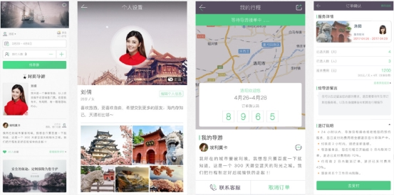
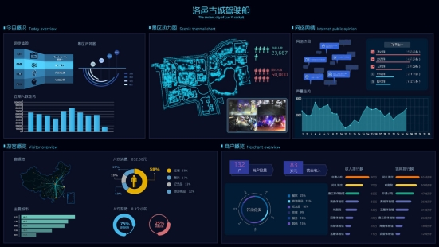
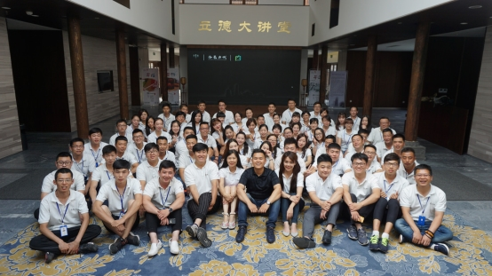

36氪独家 | 想要做新旅游场景的创造者，「中渡科技」获数千万元人民币A轮融资
找导游计划于明年3月之前覆盖国内所有省份以及东南亚大部分国家，预计上线持证导游数量可达10万+。
36氪独家获悉，旅游综合服务平台「中渡科技」于近期完成数千万元人民币A轮融资，由太证资本与中城融和领投，本轮资金主要用于旗下“找导游”App的推广。此前，中渡科技曾获青山资本早期投资。
中渡科技成立于2017年，是一家通过大数据技术为文旅行业赋能的科技公司。在成立将近1年的时间内，中渡科技先后开发了导游版的滴滴出行“找导游”和专为景区服务的大数据平台“驾驶舱”。参与策划筹备并独立运营的第一个景区项目“洛邑古城”也于今年4月正式对外开放。
中渡科技创始人兼CEO 王梓霖告诉36氪，从大学毕业到创业，过去的7年时间自己一直处在旅游行业的最前线。从导游做起，再到经营了第一家旅游购物店、第一支大巴车队、第一家酒店、第一家团队餐厅、第一家国际旅行社以及现在的第一个景区项目，过去的行业经历和认知为今日创业找到了突破口。
“国内的导游，其收入结构异常简单，两个字：返佣。举例说明，我在云南带了一支20人的团，5天4夜的行程。如果这20人没有在指定的店铺或景区付费，那么我这5天4夜的付出将颗粒无收。”
正是这种业务模式，国内导游的生计无法得到基本保证，游客的体验也因此得不到保障。在“找导游”平台上，每一个认证通过的导游在带团期间，都能够以天为单位获得几百元人民币不等的固定服务费。背后的原因在于“找导游”把过去挡在游客与导游中间的各层次中介全部拿掉， 解决了旅游行业中“最后一公里”的问题。

找导游APP
在‘找导游’APP里，游客可以直接对接导游。只需要输入时间、地点与人数，平台便会筛选出符合条件的导游。选好导游后，平台会将该导游擅长的路线展示给游客，游客只需选择感兴趣的路线并支付相应服务费即可。
找导游于今年9月底上线了2B版本，通过各个省份的导游合伙人已完成了2万持证导游的注册与上线，其C端版本也将于本月上线。值得一提的是，团队还为每位导游精心制作了海报与宣传语，游客进入相应导游的主页后会对其导游的服务有更全面的认知与了解。
如文章开头提及，除了“找导游”外，中渡还为旅游景区专门开发了一款内部管理系统“驾驶舱”，这套系统最大的特色接入了征信系统。

驾驶舱系统
游客在进入景区前的第一件事就在入口处刷自己的身份证，所以游客一旦进入景区，其在景区内所有的消费记录、位置都能够被准确抓取。如果信用良好， 游客甚至可以先消费后付款。目前这套系统仅对内为中渡自己运营的景区 —— “洛邑古城”服务，暂时不向外输出。
洛邑古城
“洛邑古城”为河南省重点PPP项目，位于洛阳市老城区，项目一期分布在洛阳老城东南角。该项目总规划面积1360亩，项目开发周期约10年，分为四期，首期规划230亩。中渡作为其独家运营方从4月10日第一期景区开放至今，已经吸引了近200万人次。
对于中渡而言，“找导游”与“驾驶舱”都是为了旅游产业链利益最大化服务的工具。王梓霖介绍到，在运营景区时，除了总结过去7年的从业经验外，中渡采取景区与商户联营制的管理办法。即在免租金的前提下，入驻商家的流水将全部进入中渡科技的账户。中渡抽取一定比例的联营管理费后再将剩余资金返回商家的账户内。
在采访的最后，王梓霖表示中渡科技的愿景是做新旅游场景的创造者。接下来中渡不仅会陆续签下更多景区的独家运营权，还会与国内各大旅游学院展开校企合作， 为相关专业的学生直接提供就业机会。

中渡科技团队合影
原创文章，作者：张达 —— 转载自36氪